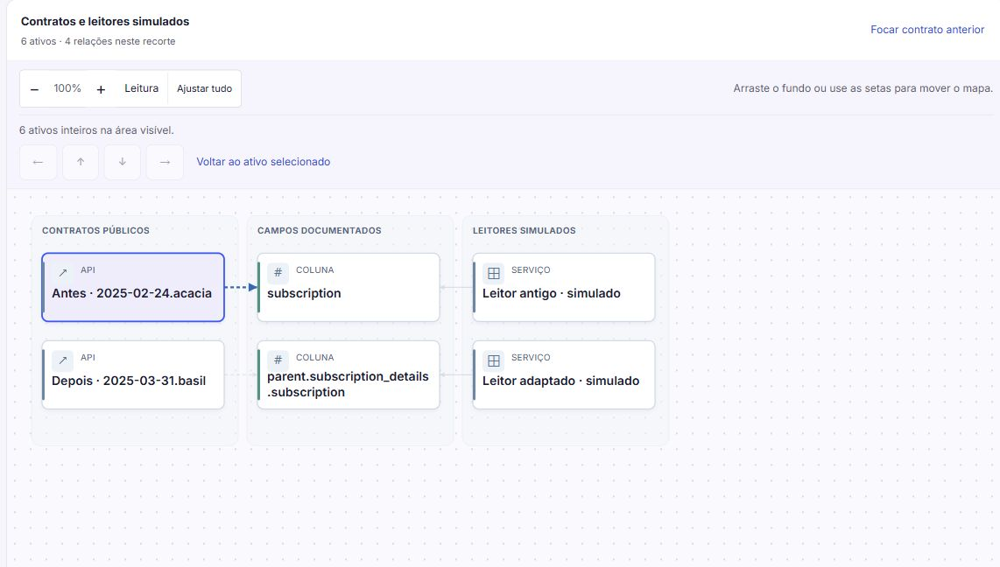

Dados · Logística
Copiloto de Entregas
Painel de pontualidade com dados históricos da Olist. O chat consulta o recorte ativo do painel e vincula as respostas aos pedidos correspondentes.
Abrir painel e chat
Dados · Logística
Painel de pontualidade com dados históricos da Olist. O chat consulta o recorte ativo do painel e vincula as respostas aos pedidos correspondentes.
Abrir painel e chat

APIs · Dependências
Análise de impacto de mudanças em contratos de API. O caso Stripe compara versões do contrato e mapeia campos alterados, consumidores simulados e evidências de dependência.
Abrir caso StripeAutomação · Make
Automação que coleta vagas públicas, extrai os requisitos de cada trilha e envia um resumo por e-mail, com controle de duplicatas.
Ver funcionamento
Python · Claude
Fluxo de exploração de dados em que o código Python gera o gráfico para o notebook e uma descrição textual dos mesmos dados para o Claude.
Ver fluxo de análise